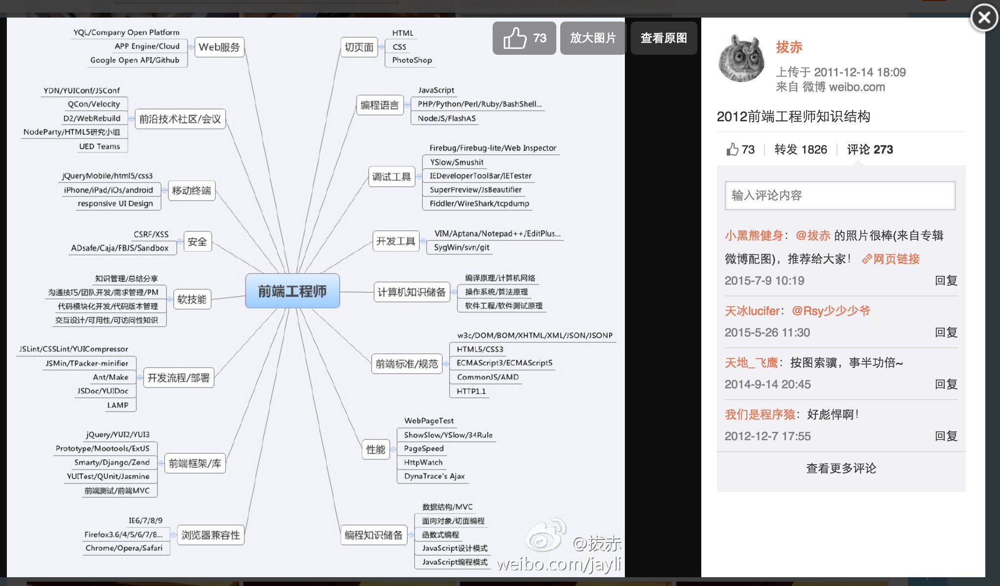
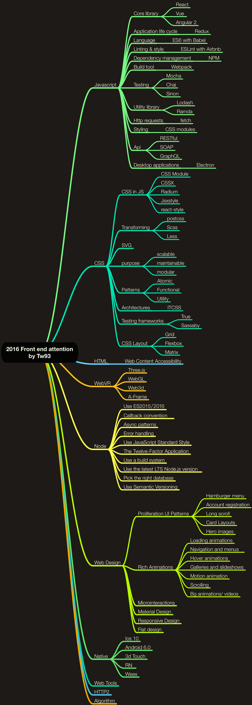
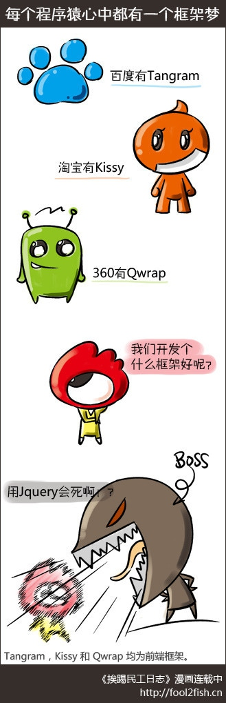
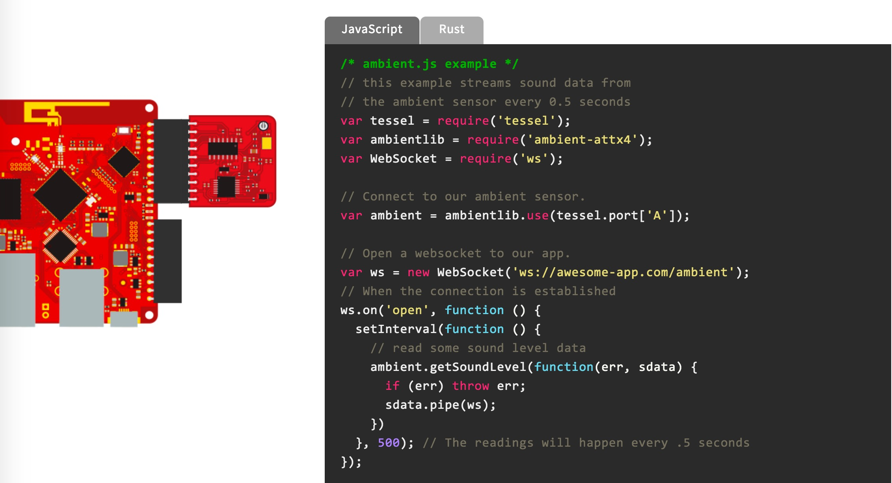
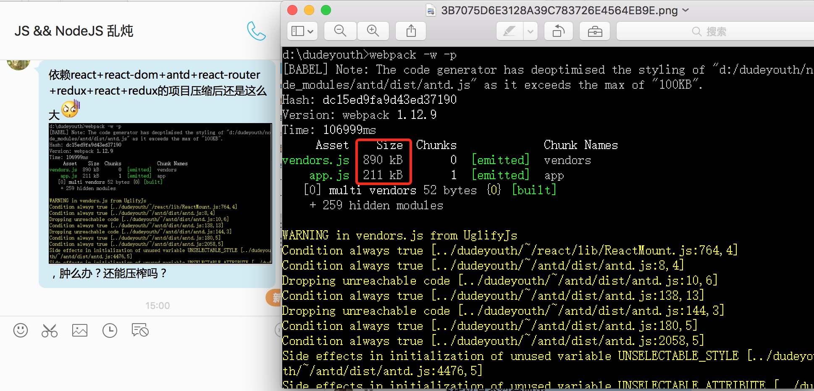

前端这十年
个人前端历程感悟
关于为什么分享这个


迷茫与危机感
还记得它们吗？
- Visual Basic
- ASP
- Flash
十年前前端圈子的状态
- 2005-02-08 Google Maps Launched
- 2005-02-18 Ajax
- 2005-02-xx Prototype
- 2005-03-xx Dojo
- 2006-02-13 YUI
- 2006-08-26 Jquery
- 2006-xx-xx SASS
- 2007-03-07 Mootools
2012 - 前端知识结构图

2016年，前端在关注什么

2016 - 前端知识结构图
https://github.com/JacksonTian/fks
问题来了
- 前端每隔2年，难学一倍，如何跟上？
- 如何解决选择困难？
- 如何应对新技术热度的快速消逝？
- 如何做积累？
- HTML,CSS,JS被抛弃怎么办？(AR,VR)
温故而知新
我们过去究竟都解决了什么？
是什么驱动了一项技术的生存与进化？
HTML因何而生
- 最早的需求：长期信息资源共享
- 图文排版: css
- table 布局与 div 布局
- div布局的胜利: 简单是王道, 但这个简单不是学习的简单
DHTML的得与失
- 漫天动画的时代
- 动态界面对用户视觉焦点的干扰
- 用户体验的核心: 信息检索效率
- 国外网站的简洁引导界面
- 国内网站的索引模式界面
- 习惯的力量: 对操作效率的影响
- 滚动 VS 点击
搜索引擎的兴起
- SEO
- HTML语义化
AJAX带来的启示
- Google Map 遇到了什么问题？
- ASP, ASP.net的局部刷新与AJAX的区别
- 魔兽世界的启动包
- WEB应用的局限性: 运行效率，本地API权限
- WEB应用程序的本质特长: 渐进加载，服务端更新
- 胖瘦客户端的交替前进: 各领风骚数年
jQuery的胜利
- 兼容性处理
- 不侵入原型
- 事件代理
- 更简洁的API: API设计的重要性
- 插件借助开源社区的力量
为什么它们不用jQuery?

Yahoo前端团队曾经对前端社区做的巨大贡献
- YUI1 - YUI3 - EXT
- YSLOW - Yahoo 13 条前端性能优化建议 (驱动框架的核心需求)
- yui-loader
- yui-compressor
- combo server
同期的前端开发思想
- namespace
- css grid
- css reset
- 组件化
- 自定义事件 - 观察者模式
- JS 设计模式
YUI:面向对象的经典开发模式
一度的巅峰: EXT
前端生态环境的剧烈变化
- 移动端兴起:html5
- JS能力的扩展:NodeJS
- 思考: Jscript 和 VBScript 为何未能兴起?
- 思考: flash的没落仅仅归结于乔布斯?
- 思考: 前端为何忽然这么兴盛?
到目前为止Node的最大意义
- 戏言: 只有男人才懂男人
- 只有前端才懂前端
- 目前 Node 对前端工程生态的意义远大于在后端发挥的作用
开发工具的演化
- Dreamweaver: 不专业的工具
- Aptana, Eclipse: 笨重
- notpad++, editplus, vim: 轻量,插件配置繁琐
- sublime, atom: 改良的插件管理，借力社区
测试的演化
- JSUnit
- jquery unit:漂亮的UI
- should:语义化
- karma + mocha + chai: 插件组合
进击的CSS
- SASS 2006 - 今
- LESS: 沾了 Node 的光
- PostCss: 插件化, 借助社区力量
任务管理的演化
- ant: 你要学习java,社区支持不足
- 后端脚本: 一个字，累
- grunt: 强大的Node社区后盾
- gulp: 流概念的引入
- webpack / fis: 插件管理
注意到什么关键词了吗？
插件！社区！
模块管理的演化
- YUI loader: 命名空间
- 后端脚本合并: python, php, java ...
- AMD: requirejs, 相比YUIL没有实际明显优势
- CMD: seajs, 相比YUIL没有实际明显优势
- browserify, 质的变化:不用再写合并代码
- webpack + es6 + babel, 质的变化:直接接轨未来
代码书写方式的演化
- 基础需求:智能提示 JSHint/JSLint
- 效率优化: Emmet
- 对JS语言的不满: CoffeeScript
- 万行 Hello World: Dart
- TypeScript: 无论多好，推广不起来就会挂
- ES6: 再不出来,就没ES6啥事儿了
- ES演化方向: 编写更快，传输更快，解析更快，执行更快
观察者模式演化
- 自定义事件，广播
- MVC: 开启属性监听
- Angular: 脏检查
- React: Virtural Dom + 组件化
- Object.observe
- immutable-js(php画外音:我们早就玩烂了)
广义HTML5
- css3
- audio, video
- web-socket
- webrtc
- canvas / svg / webgl
- ...
JS能力的再度扩展
- react-native
- node-webkit
- tessel.io

JS统一世界?
- 当你手里只有锤子，一切看起来都像钉子
- 如果全世界人都会用锤子，能做成钉子的都会被设计成钉子
环境变化促生开发思想的革新
MVC: Backbone
- RESTFUL
- 组件事件通知的尴尬: 思考一个遍布页面的关注按钮
- 分类对象的意义
- 管理前进与后退
- 由来已久的设计理念: 看看那些游戏的设计架构
- M:dom, V:css, C:js
MVVM: 时间换时间
- microsoft: winjs
- knockout, ember
- Google: angular
- 思考: 为什么 angular 出现在 Google?
- 思考: 为什么就 angular 火了?
- Google 业务场景
- 大公司支持, 普适性, 开放, 社区力量, 被充分考虑的api设计与规范
- 学习复杂度问题
BigPipe 与 React
- BigPipe: 充分挖掘网络潜力
- 思考: 为什么 react 出现在 Facebook?
- Facebook 业务场景
- 对比 weibo 业务场景
- React Native 与社区支持
阴云:SPA困境
OK, 你开始使用React

网络性能不是问题？
- 你以为网络应该是这样:
- WIFI: 30M/S
- 实际上网络是这样:
- 阻塞, 丢包, GreatWall
- JS下载完成之前，你不会获得内容
- 做直出? 同一套代码？仅仅是同一套模板
- 性能？内存？稳定性？上报？监控？人力？
刨除网络性能问题
- 内存管理: 模块不断被加载，何时拆卸?
- SEO怎么办? 上prerender? 效果如何?
- 不同框架，不同的学习成本与管理成本
- 大量属性监听带来的执行性能问题
- 对比以往，我们试图控制的状态是不是太多了?
没有通用的最佳实践
web大环境的发展依然缓慢
也许是解药，也许是危机
- web components
- http2
- VR, AR
我们已经有了什么
- 大量可能存在兼容性问题的浏览器API
- 标准的模块管理规范
- 极大丰富的效率优化工具
- 类 MVC 思想的引入
- 一个还在进击各个领域的语言
- 极大丰富的开源组件
- 能力各异的框架
总结
前端已发展为一项综合学科
- 本质是人机交互方向
- 用户体验与交互设计
- 开发效率
- 性能管理
- 用户安全
行业发展趋势
- 上层决定下层，变化永不会停止
- 标准与社区活跃度决定生命活力
- HTML,CSS可能会比JS活的更久
- 下一巨变在AR领域: 回归简单
- WEB 3D展示
- 平面设计不会死: 全新的响应式设计
- 多屏互动
个人的建议
- 前端每隔2年，难学一倍，如何跟上？
- 如何解决选择困难？
- 如何应对新技术热度的快速消逝？
- 如何做积累？
- HTML,CSS,JS被抛弃怎么办？(AR,VR)
- 按需学习, 基础优先
- 结合开源, 维护优先
- 学习开发思想，算法与解决方案
- 持续更新个人技术栈
- 技术并不是全部